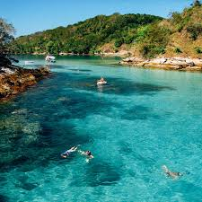

Descobrindo as Praias do Nordeste
As praias do Nordeste brasileiro são conhecidas por suas águas cristalinas, areias claras e clima ensolarado durante quase todo o ano. Cada destino possui características únicas, que vão desde falésias coloridas até piscinas naturais formadas por recifes de corais.
Além da beleza natural, a região oferece uma rica cultura local, com culinária típica, música e tradições que encantam os visitantes. Explorar as praias nordestinas é uma experiência completa, combinando descanso, aventura e contato com paisagens inesquecíveis.
